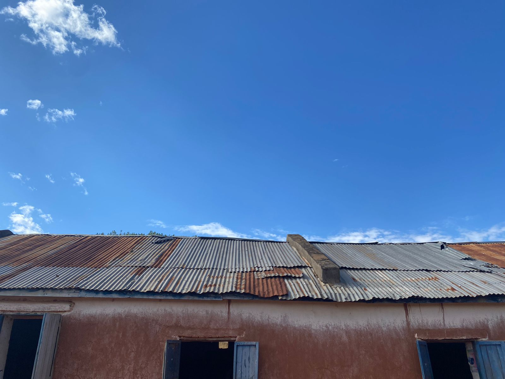
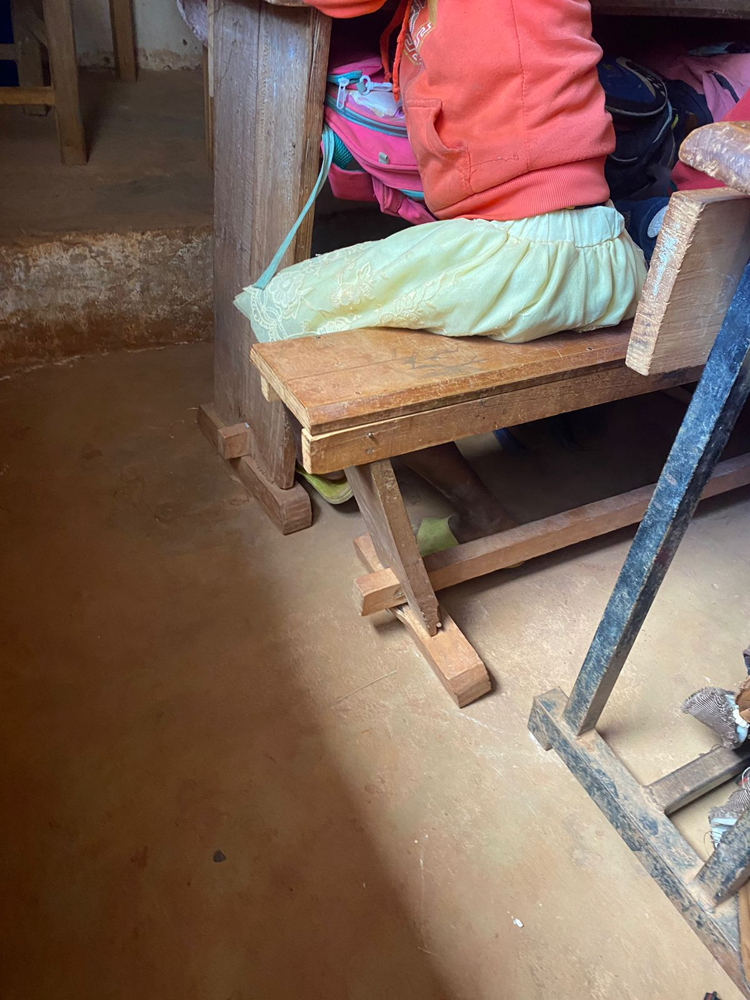
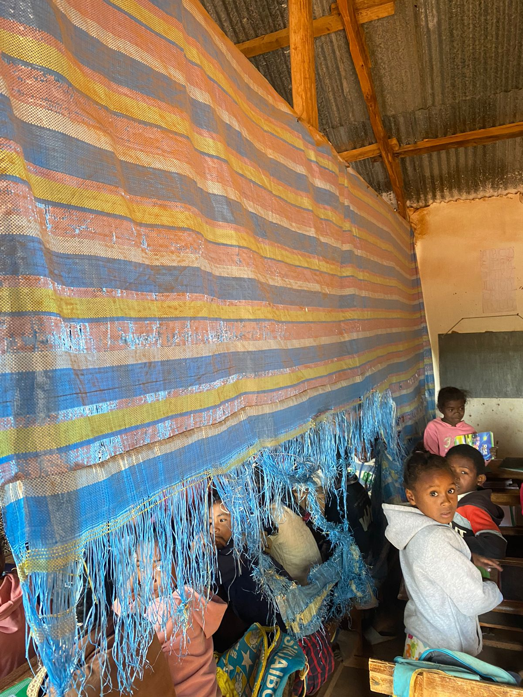
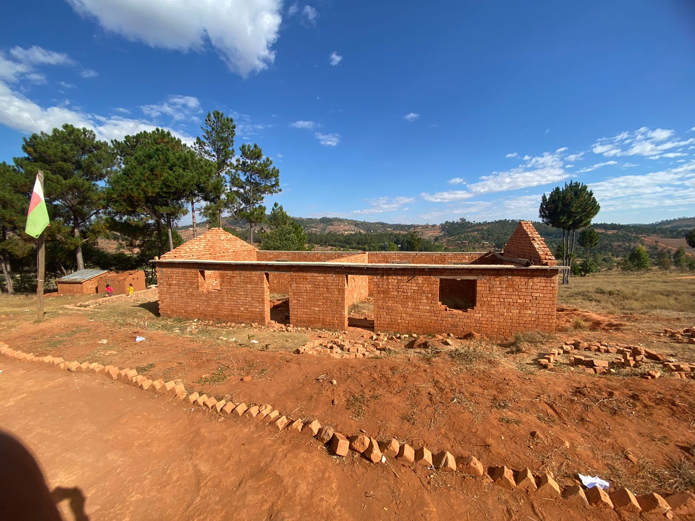
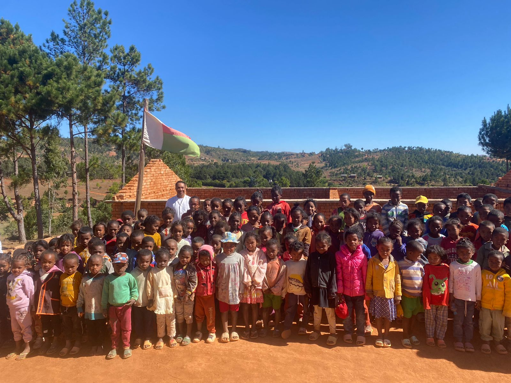
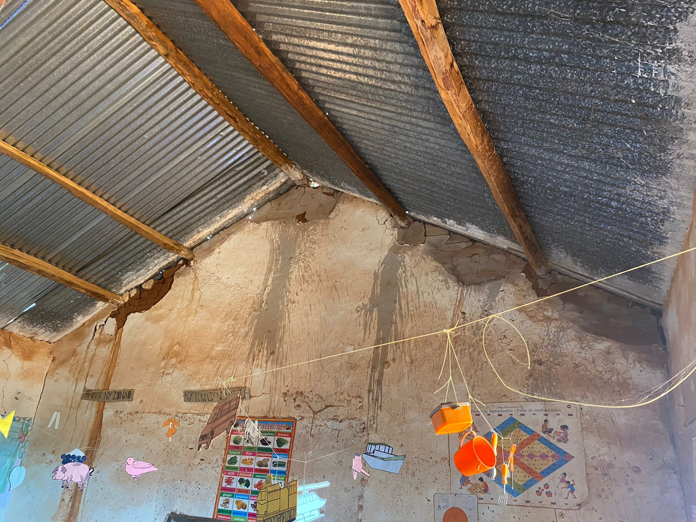

100%
Taux de réussite au CEPE — malgré des conditions extrêmes.
Des indicateurs concrets et une lecture honnête de ce qu'il reste à accomplir.
Taux de réussite au CEPE — malgré des conditions extrêmes.
Forte mobilisation communautaire associée à un apport concret déjà sur le terrain : tables-bancs, cloisons, kits WASH et peinture de protection.
Photos du terrain à Ambondrona






« De l'urgence à la durabilité : un projet concret et transparent. »